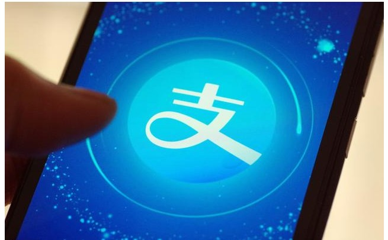

支付宝特权福利！芝麻分600以上用户惊喜，网友：幸福 来得突然？
支付宝特权福利！芝麻分600以上用户惊喜，网友：幸福 来得突然？
这些年，马云的风头正盛，但是上个月他毅然辞去了阿里巴 巴的职务。而马云所做的很多事情也的确改变了这个世界，特别是在移动支付领 域，更是走在了世界的前列。如今中国的移动支付已经成为老百姓的必备，支付 宝对中国社会的变革都带来了深远的影响。不过马云依然没有满足，他认为移动 互联网将会成为人类的基础设施，而且这里面的机会和各种挑战还非常多。
支付宝的诞生就是为了解决淘宝网的客户们的买卖问题，而 随着支付宝的用户的不断增加，支付宝也推出了一系列的附加功能。比如生活缴 费、转账汇款、还信用卡、车主服务、公益理财等，往简单的说，支付宝既可以 满足人们的日常生活，又可以利用芝麻信用进行资金周转服务。除了芝麻分能够 进行周转以外，互联网信用体系下的产品多多，我们对比以下几个产品看看区 别:
- 蚂蚁借呗，芝麻分600并且受到邀请开通福利，这个 就是支付宝贷款，直接秒杀了银行贷款和线下金融公司，是现在支付宝用户使用 最多的。
- 微粒贷：于2015年上线，主要面向QQ和微信征信极好的用户而推出，受到邀请才能申请开通，额度最高有30万，难度较大
- 蚂蚁巴士：这个在微信 蚂蚁巴士 公众平台申请,对 于信用分要求530分以上才可以,额度1-30万不等，目前非常火爆

说起支付宝中的芝麻信用功能，相信更是受到了许多人的推 崇，因为随着自己使用的不断增多，信用分会慢慢提高，而达到了一个阶段，就 可以获得许多的福利。而当我们的芝麻信用分可以达到600分以上的时候，会有 令我们想象不到的惊喜，接下来就让我们一起来看看，具体都有哪些惊喜吧。
一、芝麻分600以上福利之信用购。网购相信大家 都不陌生，但是很多时候，网购都有一个通病，就是没办法试用，导致很多人买 了很多自己不喜欢的东西。但是只要你的支付宝芝麻分在650及以上，就能立马 享有0元下单，收到货使用满意了再进行付款。还能享用美食的专属优惠，是不 是很耐斯
二、芝麻分600以上福利之信用免押。芝麻信用与 木鸟短租联合推出信用住宿服务，芝麻分600及以上的用户可享受免押入住特 权。木鸟短租拥有全国50万套房源，是国内领先的短租民宿预订平台。包括大家 知道的飞猪信用住，大部分酒店可以免押金入住，离店再交钱。
三、芝麻分600以上福利之国际驾照。我们经常听 说的可能只是中国驾照，但现在芝麻分已经应用到了国际领域，只要你的芝麻分 够550就可以免费办理国际驾照，也有不少人非常佩服马云，一个简单的芝麻分 居然有如此大的功能，也从侧面反应出来马云在国际上的地位，这个国际驾照是 由新西兰、德国、澳大利亚联合认证，可以在全球200多个国家通行，相信大家 一定都有一个自驾全球的梦想吧，而现在支付宝就给了你一把钥匙，剩下的就你 自己搞定了！有没有想带着你的女神来一次浪漫之旅呢？
登录页面 案例效果随着互联网对我们生活的改变越来越大，信用这一词也被大 家推上风口浪尖，不论是生活出行，还是其他的互联网服务，与信用体系已经密 不可分了，马云当初说道，找老婆需要拼芝麻分，如今似乎也要成为现实，那么 你们的芝麻分有多少了呢？